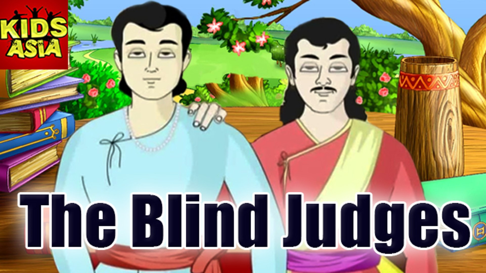

|  |
“Oh, king Vikram! You look tired. I shall tell you one more story for your enjoyment. Long ago there lived a Brahmin, Agniswamy in the town Brahmasthala situated on the bank of the river Kalindi. He was loyal to his religion. His daughter’s name was Mandaravati. She was extremely beautiful. She was yet to be married. Agniswamy was in search of a groom who is educated, beautiful, and a man of good qualities. One day, three Brahmins who were young arrived at Brahmasthala. All three of them were handsome and intelligent. They had come from Kanyakubja. They were all known to each other. All of them once saw Mandaravati and got fascinated by her beauty. Each one of them desired to marry her. There was a feeling of competition among the three brahmins now. One day all of them approached Agniswamy one by one and requested him to get Mandaravati married to them. Agniswamy was in a fix. He and his family members were unable to take any decision. Finally, they decided that Mandarvati should herself select the groom out of the three Brahmins. But the three brahmins were worried. Every day they used to see Mandaravati’s beautiful face. |
|
One auspicious day Agniswamy invited the three Brahmins to his house. Each one thought that Mandaravati would select him. They arrived at her house. Mandaravati saw all three. She was now in a fix. Whom should she select? She was upset. While she was sitting in her room, to her misfortune a cobra entered the room and poisoned her. She died. The Brahmins were so sad to see this. They were not in a position to leave her. However, Mandaravati was cremated. One of the three Brahmins collected her bones and went to the river Ganga. The second one built a house at the place of the cremation and lived in it. The last one remembering Mandaravatri went on pilgrimage. During his journey, he resided in a Brahmins’ house in a village. The Brahmins’ wife was wicked. One day her child behaved mischievously. She got angry and threw the child into the fire. The child was burnt into ashes. The young Brahmin felt that it is no good to stay in that house and therefore he just started to quit. At that moment the owner of the house consoled him and he took a pinch of mud and put it on the ash reciting the ‘amrita sanjeevini’ hymn. The child got life and was alive again. Then the Brahmin kept the book containing the amrita sanjeevini hymn on a table. He asked his wife to serve food to the young Brahmin. The young Brahmin ate well. Everybody slept in the night. At the midnight the young Brahmin took the book and rushed toward Brahmasthala. He wanted to reach as early as possible the place where Mandaravati was cremated. By the time he reached the cremation ground the Brahmin who had been to the river Ganga also returned. Another young Brahmin was there in the hut. All of them again assembled at one point. |
|
|
The young Brahmin who had brought the book of hymn took a pinch of mud and put it on the ash reciting the hymn. Immediately Madaravati became alive. She was looking still more beautiful. All three were immensely joyous. But they started quarreling to marry her.” I recited the hymn. That’s why she got life,” one of them said.”But I had been to the river Ganga and dipped her bones in the river that is the reason Mandaravati got back her life,” another Brahmin said. How is it possible? All these days I have protected the ash. Therefore Mandaravati is my wife” the third youth said. Betaal asked king Vikram: “oh king Vikram! Now tell me. Who should be the husband of Mandaravati? Knowing the answer if you remain silent, your head will split into a thousand pieces!“ “The Brahmin who gave life to Mandaravati becomes her father. The person who took her bones to the River Ganges for dipping is supposed to be her son. The youth who made her ash as a bed and slept on it has loved her as a husband. Therefore he is the appropriate husband of Mandaravati” Vikram replied. Vikram broke his silence by replying to Betal. Betaal glided back to the tree. |
|